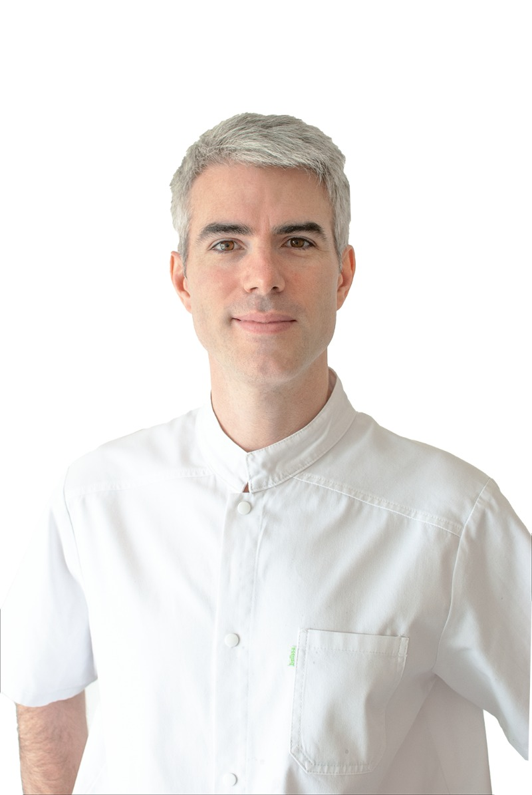

Dr Alexandre Portmann
Ophtalmologiste, spécialiste en chirurgie vitréo-rétinienne
Parcours
- Depuis 2022Président de la Société de Chirurgie Rétino-Vitréenne (SCRV)
- 2017 – 2019Praticien à l’Hôpital Fondation Adolphe de Rothschild, Paris (service du Dr Caputo)
- 2016 – 2017Praticien hospitalier, pathologie vitréo-rétinienne, CHU de Rouen (Pr Muraine)
- 2013 – 2016Chef de clinique assistant, CHU de Rouen (Pr Muraine)
- 2013Doctorat en médecine, Rouen · European Board of Ophthalmology
- 2012DIU Imagerie et pathologie rétinienne, Hôpital Lariboisière
- 2008 – 2013Interne en ophtalmologie, CHU de Rouen